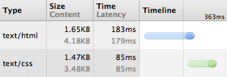
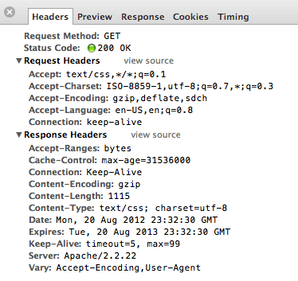
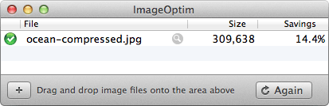

Производительность и организация
Возможность писать HTML и CSS с твёрдым пониманием веб-технологий — это большой опыт. Но по мере роста кода и трафика сайта, в игру вступает новый набор навыков, тот, который является чрезвычайно важным как во время разработки, так и для пользовательского опыта. Знание основ производительности и организации сайта может оказать большое значение.
Организация и архитектура кода может существенно повлиять не только на скорость разработки, но и на скорость отображения страниц. Обе они могут вызвать значительные проблемы не только для разработчиков, но и для пользователей. Найдите время чтобы спроектировать правильную структуру кода и определите, как разные компоненты будут работать совместно — это может ускорить готовый сайт и улучшит ваш опыт во всём.
Кроме того, эти несколько небольших шагов по улучшению производительности сайта могут окупиться в виде дивидендов. Производительность сайта напоминает правило 80/20, где 20% оптимизации ускорит примерно 80% сайта.
Стратегия и структура
Первая часть по улучшению производительности и организации сайта вращается вокруг определения хорошей стратегии и структуры для разработки кода. В частности, построение строгой архитектуры папок, изложение шаблонов дизайна и поиск способов повторного использования типового кода.
Архитектура стиля
Вопрос, как организовать стили, сводится к личным предпочтениям и тому, что является лучшим для конкретного сайта, но в целом, есть передовой опыт, которому стоит следовать. Один из них включает в себя разделение стилей на основе смысла, который включает создание папок для общих базовых стилей, компонентов пользовательского интерфейса и модулей бизнес-логики.
# Базовые стили – normalize.css – layout.css – typography.css # Компоненты – alerts.css – buttons.css – forms.css – list.css – nav.css – tables.css # Модули – aside.css – footer.css – header.css
Описанная выше архитектура включает в себя три папки, все с отдельными группами стилей. Здесь цель — начать думать о сайтах как о системах, а не как отдельных страницах и архитектура кода должна отражать это мышление. Обратите внимание, что здесь нет никаких стилей конкретных страниц.
Папка с базовыми стилями включает в себя общие стили и переменные, которые будут использоваться по всему сайту, к примеру, для макета и типографии. Папка с компонентами включает в себя стили для определённых элементов пользовательского интерфейса, которые разбиты на различные файлы компонентов, таких как предупреждения и кнопки. Наконец, папка с модулями включает в себя стили для разных разделов страницы, которые определяются в соответствии с потребностями бизнеса.
Стили компонентов — это чисто интерфейс и у них нет ничего общего с основной бизнес-логикой сайта. Модули включают в себя стили, характерные для бизнес-логики. При разметке модуля в HTML он обычно использует различные компоненты пользовательского интерфейса. Например, боковая панель страницы может содержать список и кнопку, стили которых определены в стилях компонента, в то время как другие стили, необходимые для боковой панели, наследуются от стиля модуля. Разделение стиля поощряет хорошо продумывать пресеты и возможности стилей, которые будут широко распространяться и использоваться повторно.
Стратегия организации стилей это не совсем новый путь и она уже упоминалась в разных методологиях CSS, включая объектно-ориентированный CSS (OOCSS) и SMACSS. Эти методологии имеют своё собственное мнение о структуре, а также о том, как использовать стили.
Объектно-ориентированный CSS
Методология объектно-ориентированного CSS впервые была описана Николь Салливан в её работе по написанию стилей для больших сайтов. Объектно-ориентированный CSS определяет два принципа, которые помогут создавать масштабируемые веб-сайты со строгой архитектурой и рациональным количеством кода. Эти два принципа включают в себя:
- разделение структуры и оформления;
- разделение содержимого и контейнера.
В целом, разделение структуры и оформления включает отделение компоновки элемента от темы сайта. Структура модуля должна быть прозрачной, позволяя другим стилям наследоваться и отображается без конфликтов. Чаще это требует правильной сетки и структуры макета, наряду с хорошо продуманными модулями.
Разделение содержания и контейнера включает в себя удаление зависимости у вложенных дочерних элементов от родительского элемента. Заголовок должен выглядеть так же, независимо от его родительского контейнера. Чтобы достичь этого, элементы должны наследовать стили по умолчанию, затем расширены несколькими классами при необходимости.
HTML
<div class="alert alert-error">
<p class="msg">...</p>
</div>CSS
.alert {...}
.alert-error {...}
.msg {...}SMACSS
Похожей стратегии придерживается SMACSS (Scalable and Modular Architecture for CSS, масштабируемая и модульная архитектура для CSS), методология, разработанная Джонатаном Снуком. Масштабируемая и модульная архитектура для CSS способствует разбиению стилей на пять основных категорий, в том числе:
- Основа
- Структура
- Модуль
- Состояние
- Тема
Основа включает в себя стили базовых элементов и охватывает общие значения по умолчанию. Структура затем устанавливает размеры и стили сетки разных элементов, определяет их компоновку. Стили модуля — это более конкретные стили, ориентированные на отдельные части страницы, такие как навигация или её основные особенности. Стили состояния затем используются для дополнения или переопределения других стилей в том случае, если модуль включает альтернативное состояние, к примеру, активную вкладку. Наконец, тема может быть добавлена, когда включены стили, основанные на оформлении или внешнем виде разных модулей.
HTML
<div class="alert is-error">
<p>...</p>
</div>CSS
.alert {...}
.alert.is-error {...}
.alert p {...}
.alert.is-error p {…}В приведённом выше примере класс alert попадает в категорию модуль, в то время как класс is-error попадает в категорию состояние. Стили от каждой из этих категорий затем наследуются по необходимости.
Выбор методологии
Выбор, какую методологию использовать, в любом случае полностью зависит от вас и что вам нравится, то лучше для данного веб-сайта. Вообще говоря, сочетание OOCSS и SMACSS работает хорошо, заимствуя предпочитаемые вами принципы каждой методологии.
Производительность селекторов
Одной функциональностью CSS часто неосознанно злоупотребляют — это селекторы. Значительное внимание в CSS отдается свойствам и значениям. Пока эти стили применяются к правильному элементу, всё выглядит нормально. Это очень плохое допущение. Выбор элементов в CSS влияет на производительность, в том числе, на то, как быстро отображается страница, а также как на практике вписать стили в общую архитектуру сайта.
Сохраняйте селекторы короткими
Есть несколько преимуществ, зачем сохранять селекторы CSS при возможности короткими. Они включают в себя минимизацию специфичности, что позволяет лучше наследоваться и переноситься, плюс повышение эффективности. Длинные, более точные селекторы снижают производительность, поскольку они заставляют браузер отображать каждый отдельный селектор типа справа налево. Это также накладывает бремя на все остальные селекторы, чтобы они стали более специфичными.
/* Плохо */
header nav ul li a {...}
/* Хорошо */
.primary-link {...}
/* Плохо */
button strong span {...}
button strong span .callout {...}
/* Хорошо */
button span {...}
button .callout {…}В приведённом выше коде первый селектор весьма специфичен и может быть намного быстрее идентифицирован и показан с помощью класса. Кроме того, использование класса в этом случае значительно снижает необходимость определения родителей этого элемента, что позволяет элементу со временем менять своё местоположение без нарушения каких-либо стилей.
Второй пример включает в себя более короткие селекторы, чем в первом примере, но они могут быть улучшены путём обеспечения такого же уровня специфичности для каждого селектора. Избегайте применения чрезмерно конкретных селекторов, взамен это уменьшит шанс нарушения должного порядка элементов при их изменении. Удалив некоторые отдельные блоки селекторов и дав всем селекторам одинаковую силу, всё это позволит им лучше взаимодействовать.
Вообще, цель коротких селекторов — уменьшить специфичность, создать чистый, более отзывчивый код.
Предпочитайте классы
Классы это хорошо, потому что они отображаются быстро, позволяют повторно использовать стили и широко применяются при создании сайта. Существуют общие методы применения классов, которые позволяют увидеть, что классы работают должным образом.
Поскольку селекторы отображаются справа налево, важно следить за ключевым селектором. Это селектор в самом конце, крайний справа. Ключевой селектор имеет решающее значение, поскольку он определяет первый элемент, который браузер собирается найти. Плохой ключевой селектор может отправить браузер охотиться на диких гусей. Не бойтесь использовать класс, чтобы сделать элемент более уникальным, просто во благо производительности.
Кроме того, не предваряйте селектор класса элементом. Это запрещает стилям применяться к разным элементам и повышает общую специфичность селектора.
/* Плохо */
#container header nav {...}
/* Хорошо */
.primary-nav {...}
/* Плохо */
article.feat-post {...}
/* Хорошо */
.feat-post {…}Стоит также отметить — держитесь по возможности подальше от идентификаторов, поскольку они чрезмерно специфичны и не допускают любых повторений. В конце концов применение идентификатора не сильно отличается от использования !important.
Повторное использование кода
Одно из самых больших падений производительности приходит с раздуванием размера файла и ненужным отображением в браузере. Одним из быстрых способов, который поможет во многом сократить размеры CSS-файла, является повторное, насколько это возможно, использование стилей. Любые повторяющиеся стили или шаблоны интерфейса должны быть объединены, задействуя общий код. Если два модуля используют одинаковый фон, закругленные уголки и тень у блока, нет причин явно указывать те же стили два раза. Вместо этого они могут быть объединены в одном классе, стили при этом пишутся один раз.
Повторно используемый код не должен работать за счёт семантики. Одним из методов может быть соединение селекторов вместе, разделяя их запятой и позволяя одинаковым стилям наследоваться сразу двум селекторам. Другой подход, который часто встречается в ранее упомянутых методологиях OOCSS и SMACSS, включает в себя привязывание стилей к одному классу, а затем использование нескольких классов в одном элементе.
/* Плохо */
.news {
background: #eee;
border-radius: 5px;
box-shadow: inset 0 1px 2px rgba(0, 0, 0, .25);
}
.social {
background: #eee;
border-radius: 5px;
box-shadow: inset 0 1px 2px rgba(0, 0, 0, .25);
}
/* Хорошо */
.news,
.social {
background: #eee;
border-radius: 5px;
box-shadow: inset 0 1px 2px rgba(0, 0, 0, .25);
}
/* Ещё лучше */
.modal {
background: #eee;
border-radius: 5px;
box-shadow: inset 0 1px 2px rgba(0, 0, 0, .25);
}Между этими применяемыми подходами нет большой разницы, так как код используется повторно, а общий размер файла уменьшается.
Минимизация и сжатие файлов
Простое удаление дублирующего и ненужного кода является лучшим способом для сокращения размера файла, однако существуют и дополнительные пути. Один из способов включает минимизацию и сжатие файлов, таких как HTML, CSS и JavaScript. Кроме того, могут быть сжаты изображения, путём удаления ненужных комментариев и цветовых профилей.
Сжатие gzip
Один из наиболее популярных видов сжатия файлов называется gzip. Сжатие gzip берёт типовые файлы, включая HTML, CSS, JavaScript и др. и определяет похожие строки для их сжатия. Чем больше найдено совпадений строк, тем сильнее файл может быть сжат, таким образом пересылая уменьшенный файл от сервера к браузеру.
Настройка gzip довольно безболезненная и HTML5 Boilerplate проделал большую работу для этого. Для файлов gzip требуется добавить файл .htaccess в корневую папку веб-сервера, помечая конкретные файлы, которые будут сжаты. Точка в начале имени файла правильная, так как файл .htaccess является скрытым.
В HTML5 Boilerplate часть файла .htaccess предназначается для сжатия gzip. Копирование части .htaccess или его целиком на ваш собственный сервер поможет настроить сжатие gzip. Кроме того, стоит отметить, что файлы .htaccess работают только на веб-серверах Apache, которые должны включать следующие модули.
- mod_setenvif.c
- mod_headers.c
- mod_deflate.c
- mod_filter.c
- mod_expires.c
- mod_rewrite.c
Вообще говоря, это не является проблемой и некоторые веб-серверы также могут настроить для вас сжатие. В конце концов, сжимать файлы тоже в интересах веб-сервера.
Измерение сжатия
В браузере Google Chrome веб-инспектор выдаёт изобилие данных связанных с производительностью, особенно во вкладке Network. Кроме того, есть несколько сайтов, которые помогают определить, что сжатие gzip включено.

Рис. 1.01. Вкладка Network идентифицирует каждый загруженный в браузере файл и выводит размер файла и время его загрузки. Обратите внимание, что применение gzip снизило размеры файлов примерно на 60%.

Рис. 1.02. Глядя на файл, конкретно определяют, какой тип сжатия поддерживает браузер. В нашем случае gzip, deflate и sdch помечены как поддерживаемые в заголовке запроса. Глядя на заголовки ответа определяют, что файл был отправлен с помощью метода сжатия gzip.
Сжатие изображений
Снижение размера текстового файла помогает, но вы получите более высокие результаты путём сжатия размера файлов изображений. Общий размер файлов всех изображений по всему сайту можно быстро сложить и сжатие изображений в значительной степени поможет сохранить размер файлов под контролем.
Многие люди держатся подальше от сжатия изображений, опасаясь что сжатие подразумевает снижение качества самого изображения. По большей части это неверно и изображения могут быть сжаты без потери вида, путём удаления из него ненужных цветовых профилей и комментариев, без изменения качества изображения в целом.
Есть несколько инструментов, которые помогают сжимать изображения, двумя лучшими являются ImageOptim для Mac и PNGGauntlet для Windows. Оба они предлагают сжимать наиболее популярные форматы изображений, в частности, файлы JPG и PNG.
Демонстрация сжатия изображения

Несжатое, 455 Кб
Сжатое, 401 Кб

Рис. 1.03. С помощью ImageOptim это изображение было уменьшено более, чем на 14% без снижения или потери качества.
Следует также отметить, что установка размеров изображения в HTML путём добавления атрибутов width и height действительно помогает отобразить страницу быстрее, оставляя соответствующее пространство для изображения. Поймите, эти атрибуты должны быть использованы только для идентификации точных размеров изображения, а не для его сокращения. Использование большого изображения, а затем его уменьшение с помощью атрибутов height и width является плохой практикой, так как это загружает больше данных, чем необходимо.
<img src="ocean.jpg" height="440" width="660" alt="Океан">Уменьшение HTTP-запросов
После размера файла число HTTP-запросов к сайту — одна из самых больших ловушек производительности. Каждый раз, когда делается запрос к серверу, увеличивается время загрузки страницы. Некоторые запросы должны завершиться до того, как начнутся другие и слишком много запросов может утопить сервер.
Объединение файлов
Одним из способов и, возможно, простейшим путём уменьшения числа запросов является объединение файлов. В частности, объединить все CSS-файлы в один и все JavaScript-файлы в один. Комбинация этих файлов и их сжатие создаёт один, надеюсь небольшой, HTTP-запрос.
<!-- Плохо -->
<link href="css/reset.css" rel="stylesheet">
<link href="css/base.css" rel="stylesheet">
<link href="css/site.css" rel="stylesheet">
<!-- Хорошо -->
<link href="css/styles.css" rel="stylesheet">В общем, CSS для веб-страницы должен быть загружен в начале документа в <head>, в то время как JavaScript для веб-страницы должен быть загружен в конце, непосредственно перед закрывающим тегом <body>. Причина этих уникальных размещений происходит потому, что CSS может быть загружен, пока остальная часть сайта также загружается. JavaScript, с другой стороны, может рендерить только один файл за раз, тем самым запрещая загружать что-то ещё. С одним нюансом — когда JavaScript-файлы асинхронно загружаются после самой страницы, то происходит рендеринг. Другой нюанс, когда помощь JavaScript требуется для отображения страницы, как в случае с HTML5 shiv.
Спрайты
Практика спрайтов в CSS включает использование одного фонового изображения для нескольких элементов. Цель состоит в том, чтобы сократить число HTTP-запросов, сделанных с использованием нескольких фоновых изображений.
Чтобы создать спрайт возьмите горстку фоновых изображений, те, которые часто используются, и расположите их в одно изображение. Затем, с помощью CSS добавьте спрайт как фоновое изображение к элементу используя свойство background-position для отображения правильной фоновой картинки.
Представьте, что фоновое изображение скользит позади элементов, только чтобы выставить правильное фоновое изображение для данного элемента. Например, если элемент размером 16 пикселей в ширину и 16 пикселей в высоту, то он может выставить только фоновое изображение 16 пикселей на 16 пикселей, а остальная часть фоновой картинки будет скрыта.
Рис. 1.04. Вот спрайт для меню текстового редактора; рамки приведены для справки, как будет изменена позиция фонового изображения.
Используя спрайт выше, меню может быть создано через фон для элемента <span>. Затем, с помощью классов изменим положение фона спрайта, чтобы показать соответствующие иконки.
HTML
<ul>
<li><a href="#"><span class="bold">Жирный текст</span></a></li>
<li><a href="#"><span class="italic">Курсивный текст</span></a></li>
<li><a href="#"><span class="underline">Подчёркнутый текст</span></a></li>
<li><a href="#"><span class="size">Размер текста</span></a></li>
<li><a href="#"><span class="bullet">Маркированный список</span></a></li>
<li><a href="#"><span class="number">Нумерованный список</span></a></li>
<li><a href="#"><span class="quote">Цитата</span></a></li>
<li><a href="#"><span class="left">Выравнивание по левому краю</span></a></li>
<li><a href="#"><span class="center">Выравнивание по центру</span></a></li>
<li><a href="#"><span class="right">Выравнивание по правому краю</span></a></li>
</ul>CSS
ul {
margin: 0;
padding: 0;
}
li {
float: left;
list-style: none;
margin: 2px;
}
li a {
background: linear-gradient(#fff, #eee);
border: 1px solid #ccc;
border-radius: 3px;
display: block;
padding: 3px;
}
li a:hover {
border-color: #999;
}
li span {
background: url("sprite.png") 0 0 no-repeat;
color: transparent;
display: block;
font-size: 0;
height: 16px;
width: 16px;
}
.italic {
background-position: -16px 0;
}
.underline {
background-position: -32px 0;
}
.size {
background-position: -48px 0;
}
.bullet {
background-position: -64px 0;
}
.number {
background-position: -80px 0;
}
.quote {
background-position: -96px 0;
}
.left {
background-position: -112px 0;
}
.center {
background-position: -128px 0;
}
.right {
background-position: -144px 0;
}Демонстрация спрайтов
Картинки через data:URL
Дополнительно, вместо спрайтов закодированные данные изображения могут быть включены в HTML и CSS напрямую через data:URL, вообще устраняя необходимость в HTTP-запросе. data:URL прекрасно работает для маленьких изображений, которые никогда не меняются и там, где HTML и CSS в значительной степени кэшируются. Есть, однако, несколько проблем. Картинки может быть сложно менять и поддерживать, что приводит к необходимости генерировать другие данные. И они не работают в старых браузерах, в частности, Internet Explorer 7 и ниже.
Если использование data:URL помогает сократить несколько HTTP-запросов и HTML или CSS могут быть в значительной степени кэшироваться, то преимущества, как правило, перевешивают риск. Несколько инструментов помогут генерировать data:URL, включая конвертеры и генераторы узоров. Будьте осторожны и всегда дважды проверьте, что data:URL меньше, чем само изображение.
HTML
<img height="100" width="660" alt="Волнистый узор" src="data:image/png;base64,iVBORw0KGgoAAAANSUhEUgAAAAoAAAAICAYAAADA+m62AAAAPUlEQVQYV2NkQAO6m73+X/bdxogujiIAU4RNMVwhuiQ6H6wQl3XI4oy4FMHcCJPHcDS6J2A2EqUQpJhohQAyIyYy0nBAGgAAAABJRU5ErkJggg==">CSS
div {
background: url("data:image/png;base64,iVBORw0KGgoAAAANSUhEUgAAAAoAAAAICAYAAADA+m62AAAAPUlEQVQYV2NkQAO6m73+X/bdxogujiIAU4RNMVwhuiQ6H6wQl3XI4oy4FMHcCJPHcDS6J2A2EqUQpJhohQAyIyYy0nBAGgAAAABJRU5ErkJggg==") repeat;
}Демонстрация data:URL
Кэширование общих файлов
Ещё один способ помогает сократить HTTP-запросы и подавать страницы быстрее — это кэширование общих файлов. Когда страница загружается первый раз, определённые файлы могут затем кэшироваться. Теперь браузер не должен запрашивать те же файлы при повторном визите в течение достаточно долгого времени. Насколько длинный этот период времени решать вам, всё зависит от того, как долго вы бы хотели, чтобы пользователи удерживали определённые типы файлов.
Подобно файлам gzip, настройка заголовков для истечения кэширования файлов может быть установлена через файл .htaccess. И снова HTML5 Boilerplate находится на один шаг впереди нас. В их файле .htaccess есть раздел, помеченный как Expires headers.
Изображения, видео, веб-шрифты и типовые медиа-файлы часто кэшируются на месяц, в то время как CSS и JavaScript-файлы часто кэшируются на год. Если CSS или любой другой файл меняется чаще, чем один раз в год, то имя файла должно быть изменено, желательно с учётом версий, чтобы файл загрузился. В качестве альтернативы заголовки могут быть изменены на меньший период времени.
ExpiresByType text/css "access plus 1 year" ExpiresByType application/javascript "access plus 1 year"
Изменение «access plus 1 year» на значение «access plus 1 week» лучше подходит для CSS и JavaScript-файлов, которые меняются еженедельно, но не контролем версий с отдельными именами файлов. Для значений заголовков смотрите справку по синтаксису mod_expires.
Ресурсы и ссылки
- Best Practices for Speeding Up Your Web Site на Yahoo! Developer Network
- Rules for Faster-Loading Web Sites от Steve Sounders
- CSS Strategy Square-off от Viget Labs
- Writing Efficient CSS Selectors от Harry Roberts
- Minifying and Optimizing Files от Scott Hanselman
- HTML5 Boilerplate
- Data URIs на CSS-Tricks

Все материалы сайта доступны по лицензии Creative Commons «Attribution-NonCommercial» («Атрибуция — Некоммерческое использование») 4.0 Всемирная, если не указано иное.